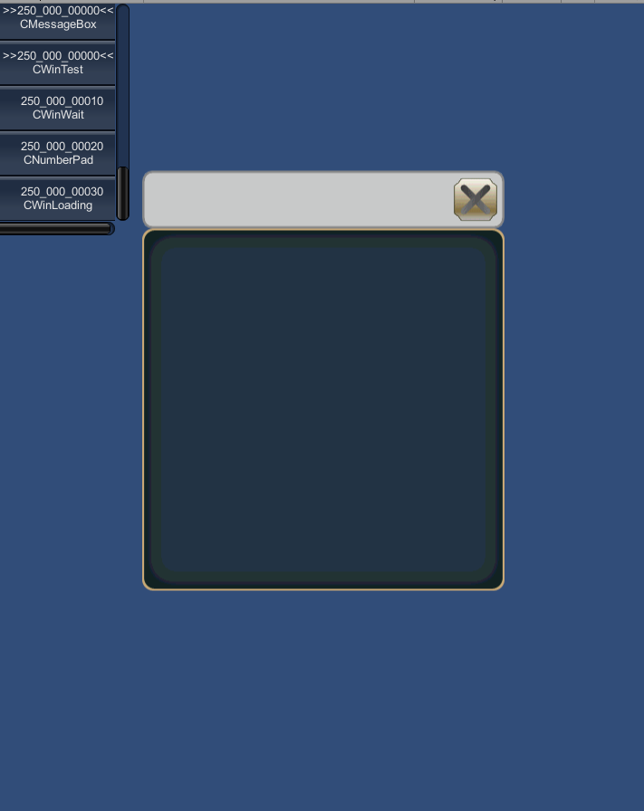

WINDOW¶
WINDOW(Window ID) {
Property 1;
Property 2;
:
:
Property n
};
Window ID is MulID.
If a wra file name is TestWindow.wra, the wra compiler automatically generates TestWindowBase.cs.
TestWindowBase.cs
Create a TestWindow.cs, and inherit the TestWindowBase.
The path for outputting the TestWindowBase.cs can be specified using the PATH on the script.
using UnityEngine;
using System;
public class TestWindow : TestWindowBase {
:
:
}
Example¶
Minimum window script¶
WINDOW(250_000_00000) {
STYLE = ANCHOR_CENTER;
SIZE = 400,400;
};
The following window is displayed in this script.
The origin position of the window is the upper left corner of the frame.(It is not the upper left corner of the title bar.)
Title bar will not be visible when you described as follows.
WINDOW(250_000_00000) {
STYLE = ANCHOR_TOP;
SIZE = 400,400;
};
Title bar will appear when you described as follows.
WINDOW(250_000_00000) {
STYLE = ANCHOR_TOP;
POSITION = 0,-64;
SIZE = 400,400;
};
Window script without the closing button¶
You set a style as follows to delete the closing button.
WINDOW(250_000_00000) {
STYLE = NOCLOSE|ANCHOR_CENTER;
SIZE = 400,400;
};
Window script without the title bar¶
Window script without the title bar
WINDOW(250_000_00000) {
STYLE = NOTITLEBAR|ANCHOR_CENTER;
SIZE = 400,400;
};
The window script which deleted all default indication¶
The window script which deleted all default indication
WINDOW(250_000_00000) {
STYLE = NOTITLEBAR|NOFRAME|ANCHOR_CENTER;
SIZE = 400,400;
};
The window script which deleted all default indication.
About the drug movement of the window¶
You can allow the movement of the window by DRAG adding to STYLE.
When you drag the title bar,the frame,a user-defined control, you can move the window. But the window movement is not possible when a style of the control has DRAG. Please try the following examples.
WINDOW(250_000_00000) {
STYLE = ANCHOR_CENTER|DRAG|NOFRAME;
POSITION = 0,0;
CLOSE_POSITION = 400,0;
SIZE = 400,400;
};
FRAME(Test) {
STYLE = DRAG;
SIZE = 400,400;
};
In this example,when you drag a frame , the frame is copied , it will move. On the other hand, you can move the window when you drag the title bar.
Property¶
RESOURCE = MulID¶
If you run a [Tools]->[KsSoft]->[Export Window Resource],this system outputs it as an asset bundle.
If you set the same MulID to some window ,these window data are included in an asset bundle together.
RESOURCE = 000_014_00000;
In this example, it outputs a 000_014_00000.unity3d as an asset bundle.
RESOURCE = output path¶
It outputs the resource data to the specified path.
If you set the same path to some window ,these window data are included in an resource data together.
RESOURCE = "Assets/KsSoft/Resources/windows";
In this example It outputs the resource of “Assets/KsSoft/Resources/windows.asset.”
PATH = window base class output path¶
It sets a path to output the window base class.
The current path is directly under the Unity project.
PATH = "../../../client/Assets/Script/TestWindow.cs";
TEX_ID = Texture ID¶
You set the default texture ID.
This value is applied as the default texture ID of each control.
TEX_ID = 010_000_00010;
TEX_ID 0…7 = Texture ID¶
You set the default texture ID.
If you omit the texture ID of the control, this value is used.
In addition, you use this property in the case you want to select the texture for the frame and title bar.
CAPTION = Caption ID¶
You set the window’s caption string.
If NOTITLEBAR is set to STYLE , this value is ignored.
CAPTION = 020_000_00010;
POSITION = X,Y¶
To determine the window display position. Display position changes by an anchor that you specify in STYLE.
The coordinates can be expressed as a percentage from the screen size .
display position = (x,y) + screen size * ratio/100;POSITOIN = 30{50},-40{50};In this example, if the screen size is 640x960, it makes the window of 540x760.
- ::
x = 30 + 640 * 50/100 = 350 y = -40 + 960 * 20/100 = 440
SIZE = width,height¶
Set the window size
The size can be a percentage of the screen.
display size = size + screen size * ratio/100;SIZE = 100{50},50{20};In this example, if the screen size is 640x960, it makes the window of 540x760.
- ::
width = 100 + 640 * 50/100 = 420 height = 50 + 960 * 20/100 = 242
SCREEN = Top Left X,Top Left Y,width,height¶
Set the position and size of the screen.
A window size and position are able to determine along the screen.
If you do not set the screen, the screen is set to full screen.
SCREEN = 0,0,0{100},0{100}; //Same as Full ScreenYou can specify the percentage for all four parameters.
STYLE = ANCHOR_CENTER; SCREEN = 0,100,0{100},-50{100}; SIZE = 400,400;In this example, It places the window as shown in the figure below.

Safe Area¶
You can set SCREEN based on the safe area to support terminals with a notch.
SCREEN = SAFEAREA(0,0,{100},{100});
PRIORITY = display priority¶
Set the display priority of window. The higher the value, display priority is higher. Please be careful to differences with TEXTURE_ZOFFSET.
PRIORITY = 32;
TEXTURE_ZOFFSET = Texture ID,Z offset¶
If controls of window use the same texture,this window system renders with single mesh.
Therefore, the priority between the control of window means the display priority between the control which assigned the same texture.
To change the display priority between each texture, you can use the TEXTURE_ZOFFSET. You can change the display priority of the mesh by this property.
The smaller this value, display priority is higher.
TEXTURE_ZOFFSET = 014_000_00010,-1; //Change to display on front
STYLE = style flag 0|style flag 1|..|style flag n¶
Display position anchor flag |
Description |
|---|---|
ANCHOR_DEFAULT |
Set the anchor position in the upper left
|
ANCHOR_LEFTTOP |
Set the anchor position in the upper left |
ANCHOR_LEFT |
Set the anchor position to the left. And vertical centering |
ANCHOR_LEFTBOTTOM |
Set the anchor position to the left.
|
ANCHOR_TOP |
Set the anchor position to the upper side Centering at lateral. |
ANCHOR_CENTER |
Set the anchor position in the center of the window |
ANCHOR_BOTTOM |
Set the anchor position at the bottom Centering at lateral. |
ANCHOR_RIGHTTOP |
Set the anchor position in the upper right |
ANCHOR_RIGHT |
Set the anchor position to the right And vertical centering |
ANCHOR_RIGHTBOTTOM |
Set the anchor position to the right Located along the lower edge |
Window display priority flag |
Description |
|---|---|
TOP |
Set the display priority of the window to maximum. This is a lower priority than POPUP and TOPMOST. If the same priority flag has been specified,display priority is determined by the PRIORITY property. |
POPUP |
Set the display priority of the window to maximum. It is priority than TOP, and a lower priority than TOPMOST. If the same priority flag has been specified,display priority is determined by the PRIORITY property. if you touch the screen other than this window, this window is closed. |
TOPMOST |
Set the display priority of the window to maximum. This is a higher priority than TOP and POPUP. If the same priority flag has been specified,display priority is determined by the PRIORITY property. |
NOECLIPSE |
Even if this window is opened, you specify it when you do not want to darken the other window.(valid only when you have specified the TOP / POPUP) |
Window function control flag |
Description |
|---|---|
NOCLOSE |
Do not place the close button. When NOTITLEBAR is attached, close button is not placed |
NOMINIMIZATION |
Unimplemented |
NOHELP |
Unimplemented |
NOTITLEBAR |
Do not display the title bar. |
NOFRAME |
Do not display the frame. |
DISABLE |
Stop the function, can’t accept input. |
DRAG |
Allow the window move with dragging. |
NOACTIVE |
It does not become active. |
HIDE |
Turn off the window display. |
NOBRINGTOTOP |
The display priority of a window doesn’t allow to raise automatically when it becomes active. |
OPENBOTTOM |
Open the window on the back. |
STYLE = NOTITLEBAR|NOFRAME;